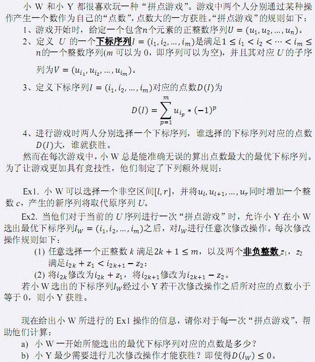
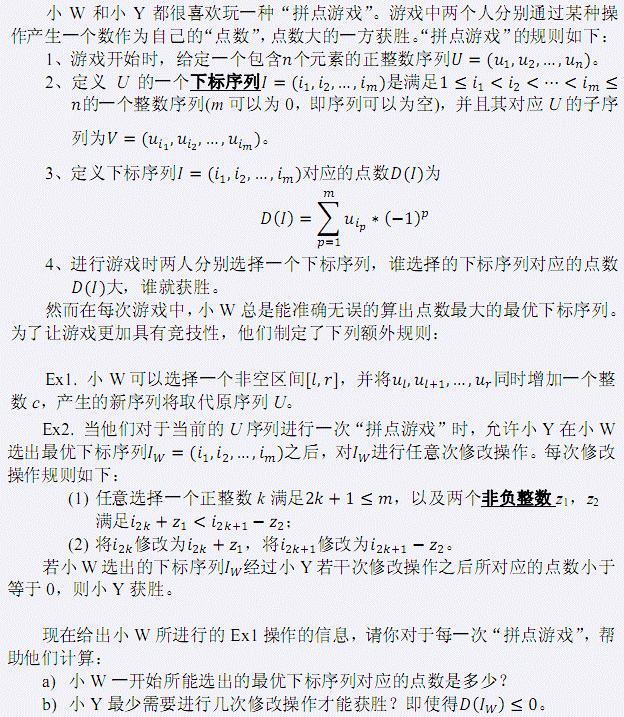

| F.A.Qs | Home | Discuss | ProblemSet | Status | Ranklist | Contest | 入门OJ | ModifyUser Xeonacid | Logout | 捐赠本站 |
|---|
| F.A.Qs | Home | Discuss | ProblemSet | Status | Ranklist | Contest | 入门OJ | ModifyUser Xeonacid | Logout | 捐赠本站 |
|---|

第一行包含一个正整数 T，表示测试数据的组数。接下来为 T组数据。 每一组数据的第一行包含两个整数 n 和 q， 分别表示 U中的元素个数和事件个数。 接下来的一行，包含n 个用一个空格隔开的正整数，第 i 个整数为初始的序列中第 i 个元素 ui。 接下来 q 行，每行代表一个事件（按事件发生顺序输入） 。每行的第一个数非 0 即 1，表示这个事件的类型。 若为 0 ：在 0 之后还有三个整数 l，r 和 c（这四个数之间均有一个空格） ，表示小 W将Ul,Ul+1,....Ur增加 c； 若为 1 ：表示两人进行了一次“拼点游戏” ，你需要输出相应的结果。 输入数据保证序列 U中的所有元素总是正整数。
对于每一组测试数据，依次对每一次“拼点游戏”输出一行包含两个由一个空格隔开的整数 Dmax 和 X，其中 Dmax 为对于当前序列 U，小 W所能选出的最优下标序列所对应的点数； X 表示小 Y 最少需要进行几次修改操作才能获胜。如果小 Y 不论多少次操作都无法获胜，则输出-1。 数据保证最优下标序列总是唯一的。
输入数据包含两组测试数据。 在第一组测试数据中： 第一次“拼点游戏”时，最优下标序列为(1,2,4,5)，小 Y只需要进行一次修改操作：选择 k=1，以及非负整数 z1=1，z2=0。这样经过修改操作之后下标序列将变为(1,3,4,5)，小 Y获胜。 第三次“拼点游戏”时，序列 U为(9,8,6,5,3)，小 W所选择的最优下标序列为空序列，所产生的点数为 0。在这种情况下，小Y无法进行任何修改操作（也无需进行任何修改操作） ，此时小 Y已经直接获胜。 对于10%的数据满足 n，q ≤ 13； 对于30%的数据满足 n，q ≤ 1000； 对于另外20%的数据满足 T=1 且 n ≤ 40000； 对于100%的数据满足 T ≤ 3 且 n， q ≤ 10^5 同时初始序列 U满足 0